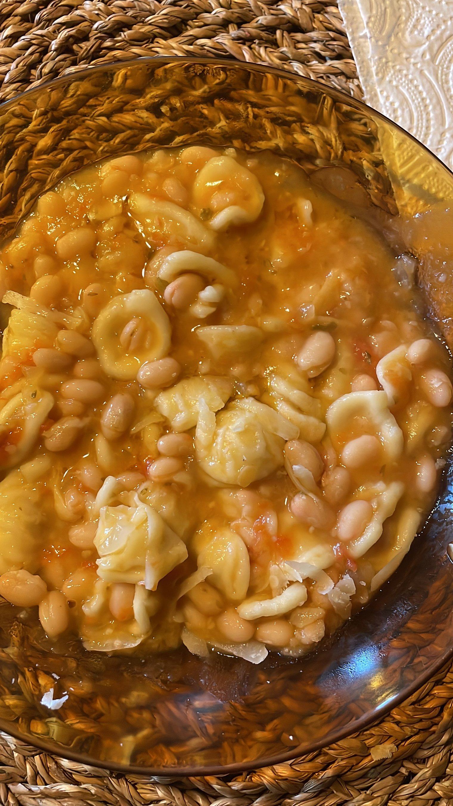

Pasta con fagioli bianchi
Ingredients
×
- 1 cipolla piccola
- 1 pomodoro grande
- 350 g di fagioli bianchi
- acqua
- pasta
- olio piccante
- origano

Preparazione
Passo 1
Si soffrigge 1 cipolla piccola fatta a pezzettini super piccoli. Quando è quasi pronta si aggiunge 1 pomodoro grande senza pelle tagliato a quadrettini. Si cucina.
Passo 2
Si aggiungono 350 g di fagioli bianchi (barattolo piccolo, già cucinati), con l’acqua se è ecologico, se no si colano. Si aggiunge acqua e si cucina abbastanza tempo.
Passo 3
Si cucina la pasta (orecchiette) a parte e dopo si mischia tutto insieme.
Consigli
Si può aggiungere olio piccante o scaglie di peperoncino nel soffritto, e origano o erbe provenzali.